Profile
Contact Information
Name: Jacqueline Wierba
E-Mail: jm.wierba@gmail.com
Phone: (226) 506-4238
LinkedIn: View Profile
About This Portfolio
This portfolio aims to supplement my resume by presenting some selected projects I have developed throughout my undergraduate studies. I believe that one of the most important parts of an undergraduate degree is to participate in hands-on projects.
Throughout the last 4 years as a Mechanical Engineering student, I was involved with a diverse selection of projects. This portfolio highlights five projects that helped enrich my technical knowledge, refine my collaboration and teamwork skills, and bring out my passion for my degree.
For each project, I provide an overview, important descriptions, photos, and contributions. If you have any questions about a specific project, feel free to get in touch with me by e-mail or on LinkedIn.
Treadmill Gearbox
Overview
For MME 3380B (Mechanical Components Design), our group designed a single-stage spur gear reducer for a low-speed rehabilitation treadmill. The gearbox converts the 2000 RPM input of a brushless DC motor into a high-torque output that drives the treadmill belt at up to 5 mph, while fitting a 12-14 in length and 8 in x 8 in cross-section envelope. The design targeted over 90% efficiency, a 20,000-mile bearing life, and stress and fatigue factors of safety above 2.5. Our final design is shown in Figures A and B.
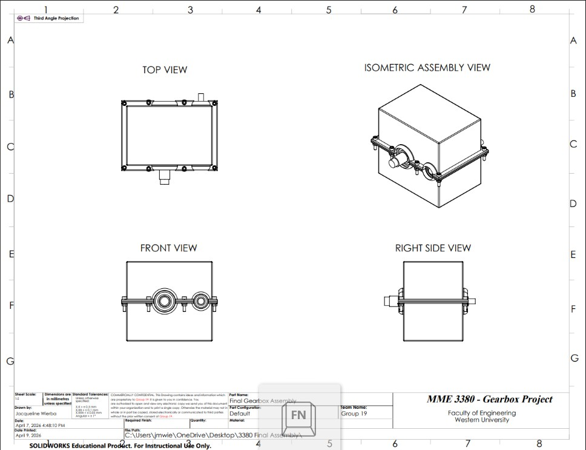
Fig. A: Gearbox Assembly Drawing (Isometric, Top, Front, and Side Views)
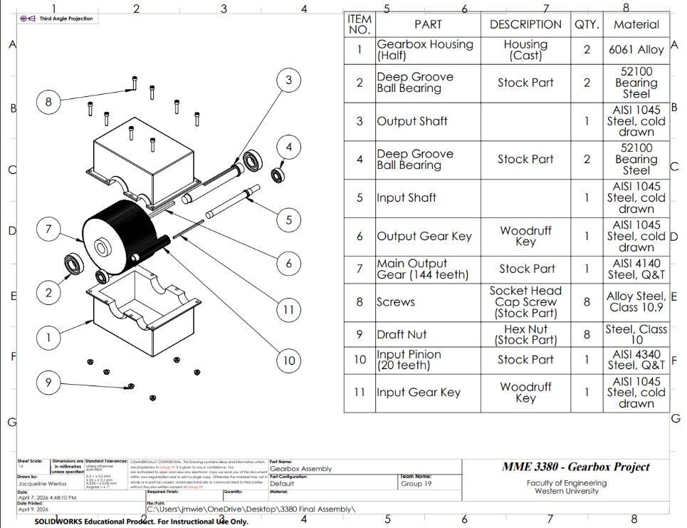
Fig. B: Exploded View with Bill of Materials
Design Considerations
- Gear Set: Specified a 20-tooth pinion and 144-tooth gear (diametral pitch of 24) for a 7.2:1 reduction. The 6 in main gear matches the roller diameter, which maximizes pitch diameter and reduces tooth stress.
- Motor Selection: Selected the 255-ACZI48-250 permanent magnet synchronous motor (42 Nm rated torque at 2000 RPM) to supply the required ~7.85 kW input power at 95% gearbox efficiency.
- Housing & Layout: Designed a split, bolted aluminum (6061-T6) housing with two bearings per shaft and keyed gear attachments, so the assembly can be built, opened, and clearly shown in section and exploded views (Figure C).
- Materials: AISI 4340 steel for the pinion, maraging steel for the gear, and cold-drawn AISI 1045 steel for the shafts and keys, balancing strength, machinability, and cost.
Phase 1 Corrections
In Phase 2, we revisited our Phase 1 calculations. We corrected the required output torque to account for the force acting on both the top and bottom sections of the belt (254.1 Nm), and recalculated the gear ratio from the required roller speed instead of the motor's rated torque. This gave a more accurate input torque, gear geometry, and motor selection.
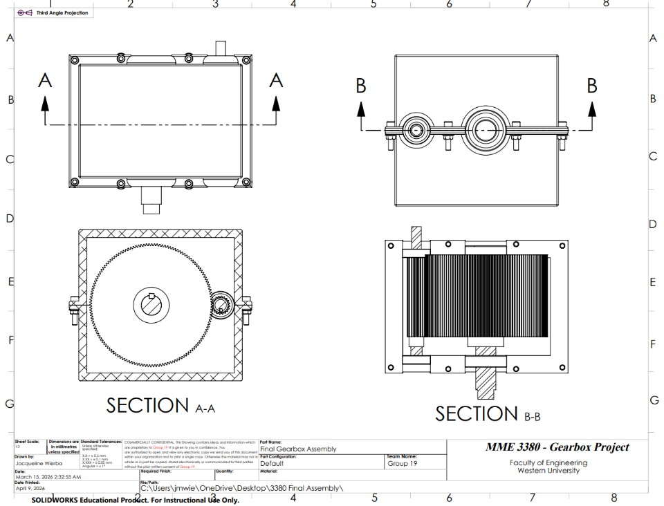
Fig. C: Assembly Cross-Sectional View
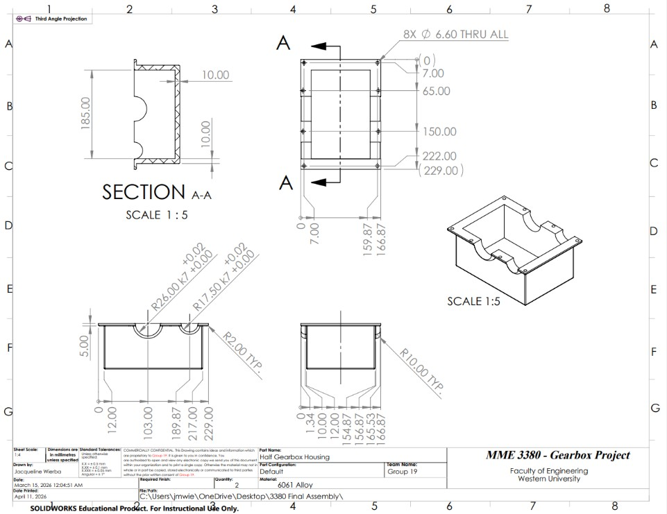
Fig. D: Part Drawing of Half Gearbox Housing
Analysis & Results
- Gear Stress: Calculated AGMA contact and bending stresses for the pinion and gear. Contact safety factors were 3.75 (pinion) and 10.61 (gear), and bending safety factors were 2.53 (pinion) and 2.63 (gear), all above the 2.5 requirement.
- Shaft Loading: Derived reaction forces from the tangential (3510 N) and radial (1278 N) gear loads, then drew shear, moment, and torque diagrams for the input and output shafts in both planes (Figure E).
- Fatigue: Applied the Marin equation to find a fully corrected endurance limit of 171 MPa. Using DE-Goodman with keyway stress concentrations, the minimum shaft diameters were 14.07 mm (input) and 23.84 mm (output); the final design uses 14.29 mm and 25 mm.
- Bearings, Deflection & Keys: Checked bearing life against the 20,000-mile target (the selected bearings are oversized for the loads), calculated shaft deflection, and confirmed keyway crushing strength.
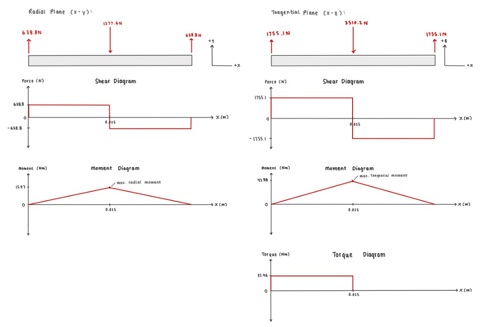
Fig. E: Pinion (Input) Shaft Shear, Moment, and Torque Diagrams
Main Contributions (Group Size: 4)
- CAD Drawings (assembly and part drawings)
- Shear, Moment, and Torque Diagrams for the Shafts
- Fully Corrected Endurance Limit Calculations
Underwater ROV
Overview
This project was developed for the Western Engineering Competition (WEC) in the Re-Engineering category. Our team was given a problem statement to convert a terrestrial RC vehicle into a functional underwater ROV. We successfully completed our design, report, and presentation within an allotted 6-hour time frame, earning us 1st Place in our category and qualifying to represent Western University at the provincial level during the Ontario Engineering Competition (OEC).
Re-Engineered Design Considerations:
- Designed an aluminum support frame (Figure F) with protective guards and pool-noodle bumpers to provide high structural rigidity and impact resistance for internal electronics. Materials selected are cost-efficient, environmentally safe, and widely available.
- Engineered thrusters (Figure G) with waterproof motor housings featuring front-facing intake ducts and O-ring seals to improve laminar flow and maximize propulsion efficiency.
- Developed a piston-style ballast tank (Figure H), driven by a linear actuator to control displacement, allowing the ROV to achieve precise buoyancy (through a ROV mass calculation) and vertical depth control.
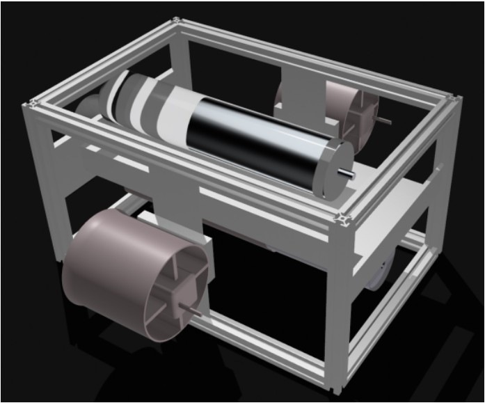
Fig. F: Modular Structural Frame
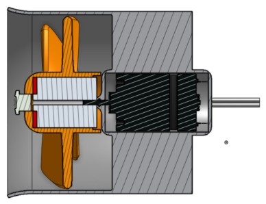
Fig. G: High-Efficiency Thruster CAD
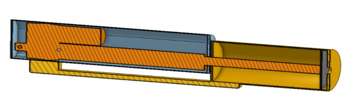
Fig. H: Linear Ballast CAD
Decision Process & Report
- Conducted a structured selection process using Go/No-Go screenings (Figure I) and Weighted Decision Matrices to identify the Tamiya Super Clod Buster as the optimal RC vehicle for ROV conversion.
- Performed a sensitivity analysis on design objectives (durability, modifiability, and volume) to validate vehicle selection against project constraints.
- Managed project timelines and documentation using Gantt charts (Figure J) to ensure all design phases, from concept brainstorming to final CAD assembly, were completed within competition deadlines.
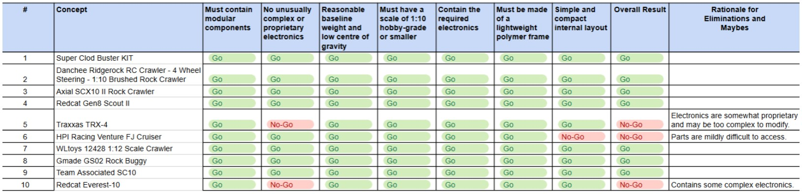
Fig. I: Go No-Go Screenings
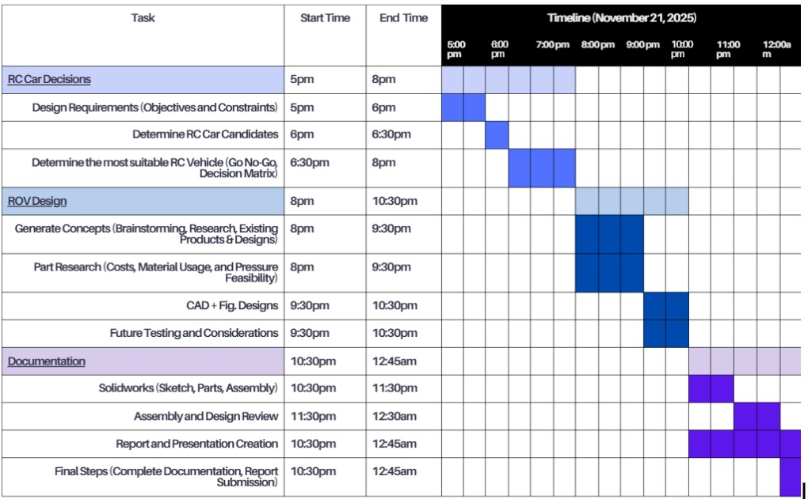
Fig. J: Project Gantt Chart
Main Contributions (Group Size: 4)
- Group Management
- CAD Design for metal frame
- Decision Processes & Report-Writing
Space Telescope
Overview
As provincial finalists at the Ontario Engineering Competition, our team was tasked with re-engineering critical components of the James Webb Space Telescope (JWST). We focused our modifications on the Spacecraft Bus (as illustrated in Figures K and L) across two separate challenges:
- Case 1 (Structural & Systems): A week-long intensive research and design project focused on increasing the spacecraft's operational lifespan.
- Case 2 (Communications): A 6-hour project to re-engineer signal transmission architecture for deep-space suitability.
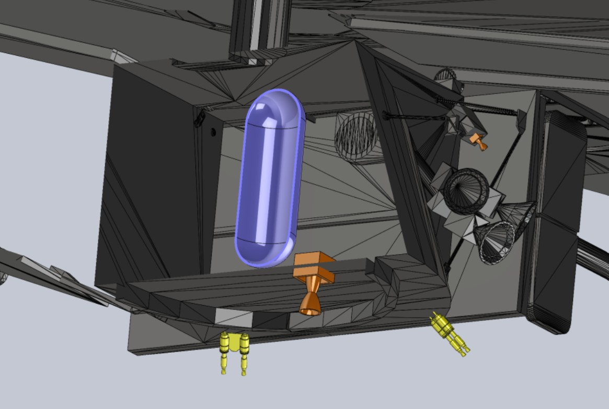
Fig. K: Current JWST Spacecraft Bus
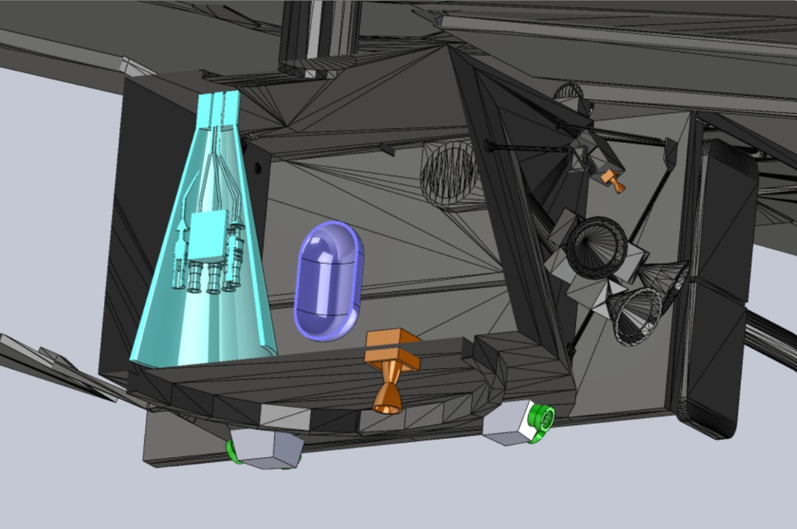
Fig. L: Re-Engineered JWST Spacecraft Bus
Case 1 Modifications
- Material Optimization: Replaced Aluminum Honeycomb panels with High-Modulus E-CFRP (Epoxy Adhesive Carbon Fiber Reinforced Polymer) to reduce overall spacecraft mass.
- Hybrid Thruster System: Replaced 8 of 12 chemical thrusters with MaSMi Hall Effect thrusters, vastly improving the JWST fuel efficiency and operational lifespan. This is shown at the base of Figures K and L.
- Power Integration: Swapped traditional solar arrays for a small-scale fission reactor system to provide a power source suitable for deep-space.
Case 1 Methods
Created a modified optimization equation (Figures M and N) that helped us understand the relationship between dry mass, propellant mass, thruster specific impulse, and longevity of telescope. This formula aided us in selecting components with appropriate specifications for our goals.
For thrusters and power generation, mass and specific impulse were considered. Inspiration for power generation was drawn from NASA's Kilopower Reactor using Stirling Technology (KRUSTY). Ashby charts were utilized for materials selection.
Alongside an extensive decision process and failure mode analysis (Figure O), our iterations were capable of extending the JWST's lifespan by 300%.
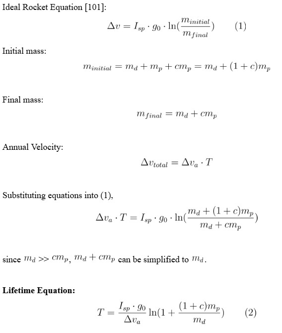
Fig. M, N: Modified Telescope Longevity Equation and Complete Derivation
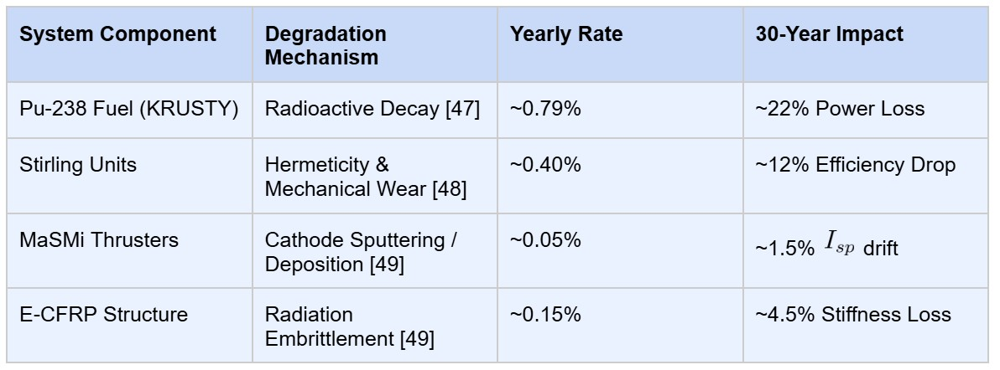
Fig. O: Degradation Mechanism Analysis of Re-Engineered Spacecraft Bus Components
Case 2 Modifications and Methods
- Laser Transmission Network: Developed an intermediate satellite constellation utilizing laser communication after the first intermediate satellite instead of traditional radio waves. This increases transmission rates and weakens attenuation over long distances.
- Redundant Pathing & Risk Mitigation: Designed a multipath transmission relay system to mitigate signal interference from celestial bodies and other interferences, ensuring continuous communication between Earth and Pluto.
- Rapid Concept Development: Executed entire system architecture, decision processes, budget considerations, risk mitigation strategies, and a finalized report and presentation within a 6-hour competition timeframe.
- Targeted Subsystem Optimization: Each intermediate satellite (D, E, and F) is optimized based on its distance from the sun (Figure R). For example, satellite F has smaller solar panels, a smaller propellant tank, and a larger power generator than satellite D to compensate for decreased solar flux and maintain power requirements for thrusters in low-light environments.
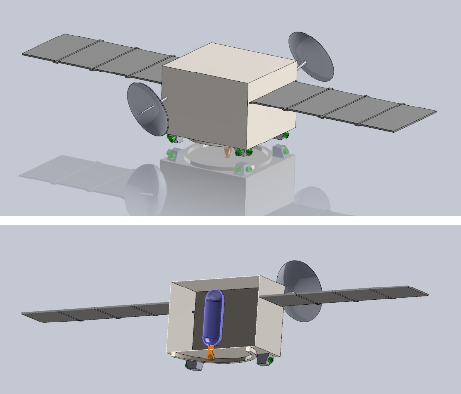
Fig. P, Q: Simplified Intermediate CAD Satellite (Intermediate 'C')

Fig. R: Sketches of Intermediate Satellites D, E, and F, simplified to display optimized characteristics
Communication Architecture
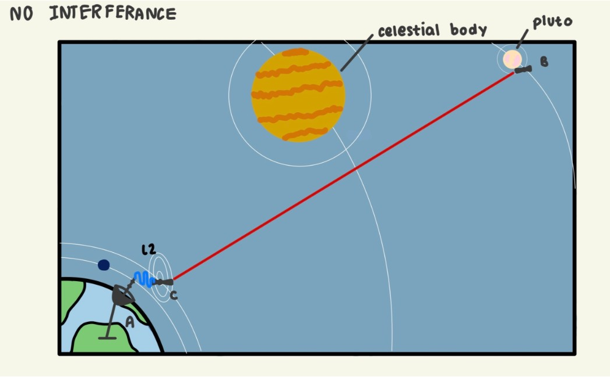
Singular Intermediate Satellite System: No Interference

Interference Mitigation with Various Pathways: Scalability
Main Contributions (Group Size: 2)
Case 1:
- Optimization Calculations
- Materials Research
- Decision Process and Failure Modes Research and Calculations
Case 2:
- General Research
- Decision Process and Calculations
- Satellite CAD
Aquaponic Farm
Overview
As a member of Engineers Without Borders (Western Chapter), I am part of a multi-disciplinary team designing and building a sustainable Aquaponic Farm. Since September 2024, we have progressed through several design iterations of our project, and are constantly modifying and improving its design. This project is currently in the active fabrication phase, moving from digital twin concepts to a physical, working system.
Proposal & Early Stages
Guided by the core mission of Engineers Without Borders, this project focuses on food security and sustainable infrastructure. Our primary goal was to design an accessible, low-cost aquaponic system that could be constructed using standard workshop tools and readily available materials like PVC and pine. This project serves as a practical opportunity to mentor engineers in hands-on fabrication, moving from conceptual ideation sketches (Figures S and T) to a scalable and structural design.
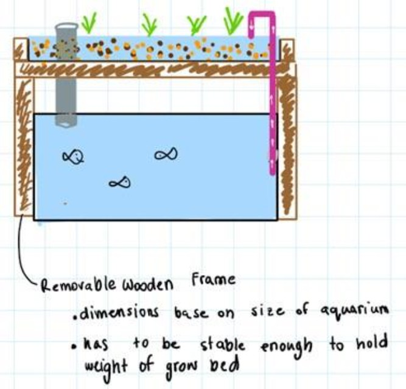
Fig. S: 1st Ideation Sketch of Aquaponic Farm
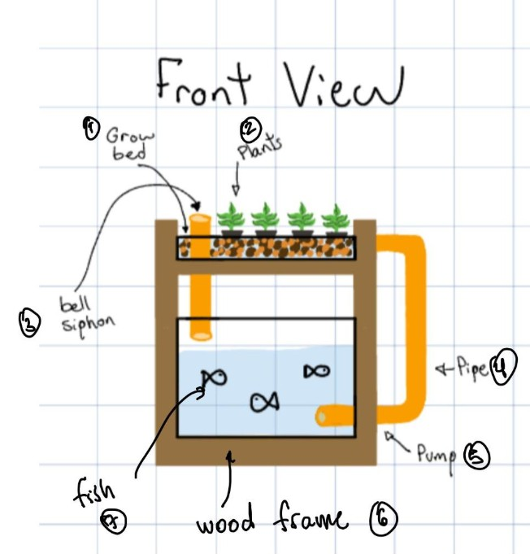
Fig. T: 2nd Ideation Sketch of Aquaponic Farm with simple pipe system
Current & Future Steps
- Fish Enrichment & Structural Design: Designed and fabricated a custom "fish tunnel" to improve the tank's internal architecture. This component was first modeled in SolidWorks (Figure X) and then integrated into the physical tank (Figure Y). Our structural design, first modeled on SolidWorks (Figures U and V), is shown constructed in Figure W.
- Future Iterations: Developing a real-time monitoring system using LabVIEW to track pH levels, water temperature, and nitrate concentrations. Creating long-term plans for fish, plant, and tank maintenance.
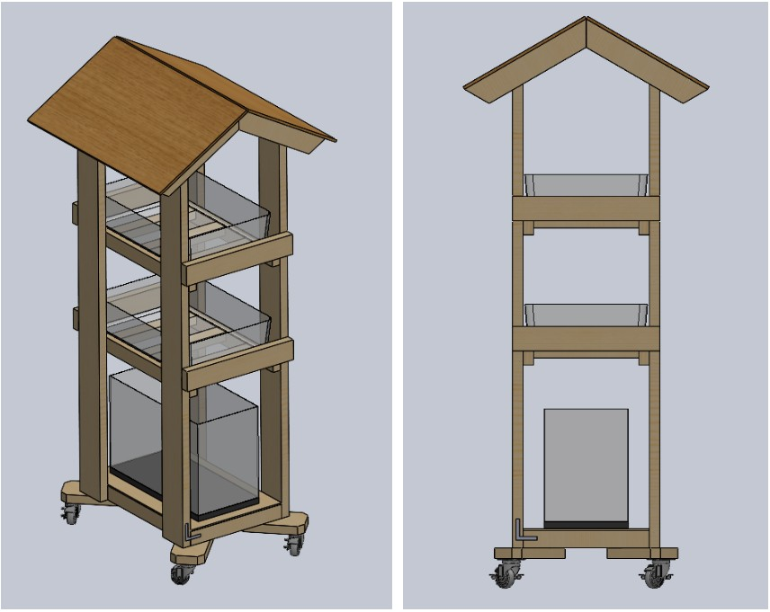
Fig. U, V: CAD of Wooden Frame of 2-Tier Farm
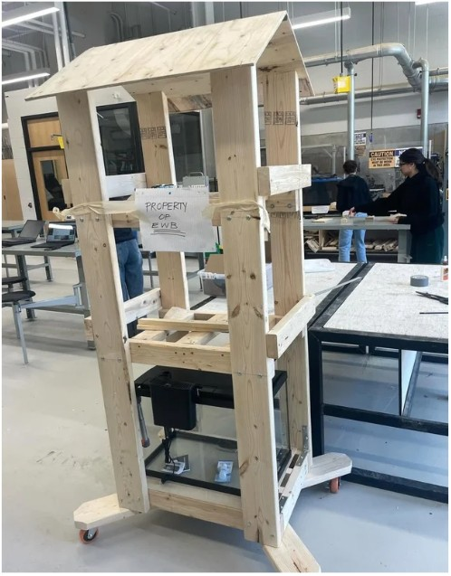
Fig. W: Constructed Wooden Frame
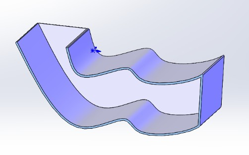
Fig. X: CAD of Fish Tunnel
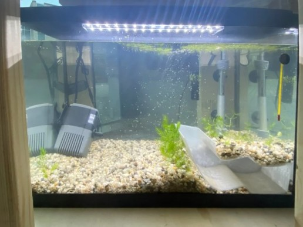
Fig. Y: Fish Tunnel, printed with PETG, in tank
Main Contributions (Group Size: 6)
- Woodworking
- Research on plants, fish, and hydrostatics
- Materials Selection
- CAD Design & Prototyping (Wooden frame and fish tunnel)
Maglin Iconic Bench
Overview
In collaboration with Maglin Site Furniture, our group engineered a sustainable solution for the 'Iconic Bench' following the endangerment of their primary material, Ipe wood. Through in-depth indexing and manufacturing analysis, we proposed Black Locust as a high-performance, wood-based replacement. Our design, illustrated in Figures Z and AA, ensures long-term outdoor durability while adhering to modern environmental compliance and ethical sourcing standards.
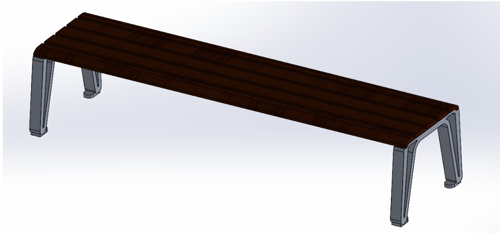
Fig. Z: CAD Model of Maglin Iconic Backless Bench
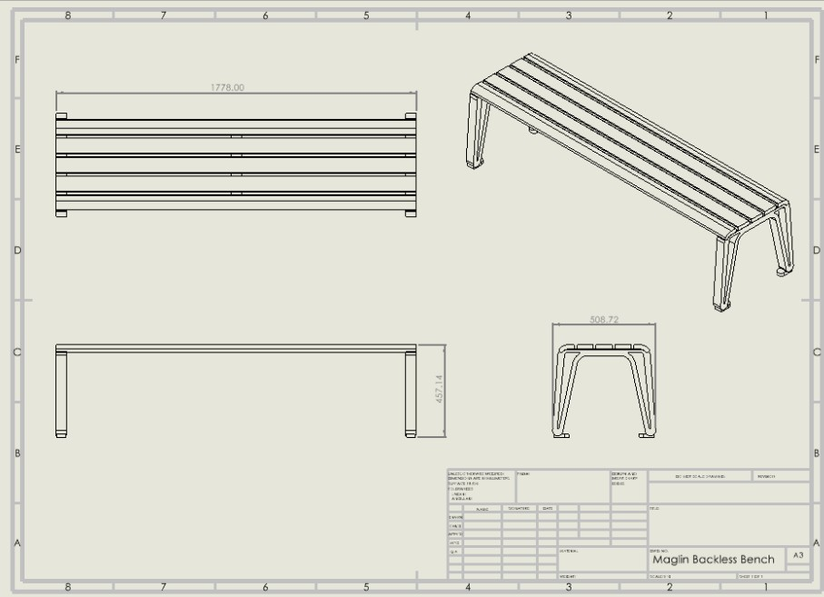
Fig. AA: Drawing of Maglin Iconic Backless Bench
Methods
- Utilized a systematic screening process, including Go/No-Go charts and Pugh matrices (Figure AB), to identify a sustainable alternative to endangered Ipe wood for outdoor furniture. Screening process for both materials selection and manufacturing processes were utilized.
- Used Ashby Charts (Figure AC) to compare Young's Modulus, yield strength, and density across various North American hardwoods and engineered lumbers.
- Selected Thermally Modified Black Locust as an optimal material due to its high Janka hardness, exceptional decay resistance, and 50-year service life without the need for chemical preservatives.
- Tested for failure modes such as thermal cycling (Figure AD), distributed loads due to heavy snowfall, and bending, using SolidWorks FEA Simulations.
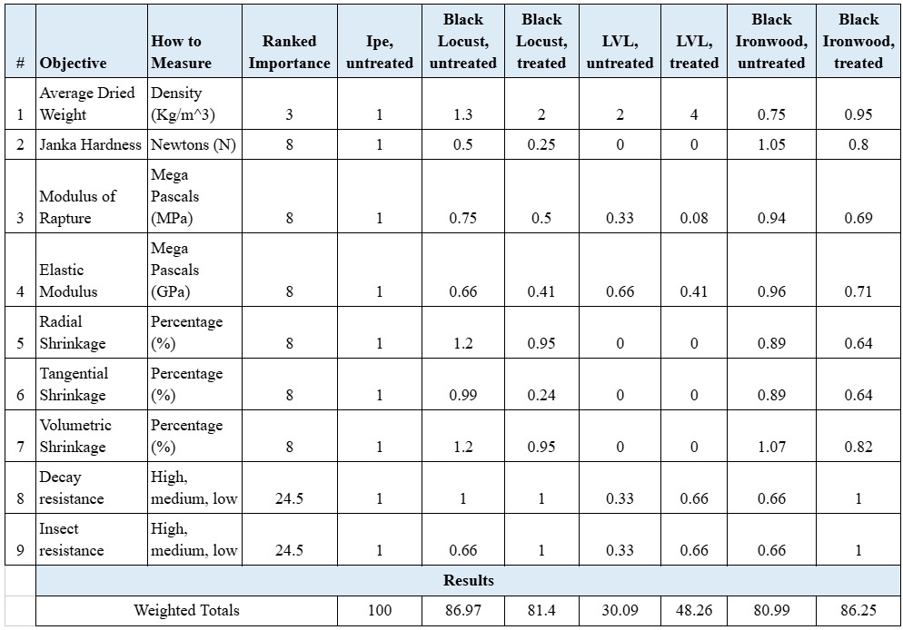
Fig. AB: Material Pugh Matrix
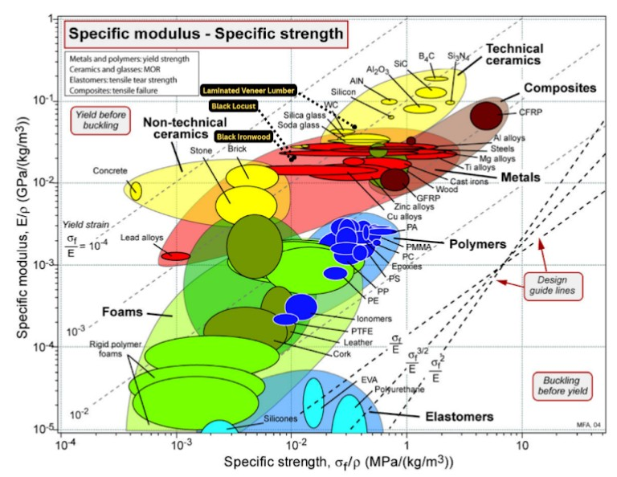
Fig. AC: Ashby Chart of Specific Young's Modulus vs. Specific Strength
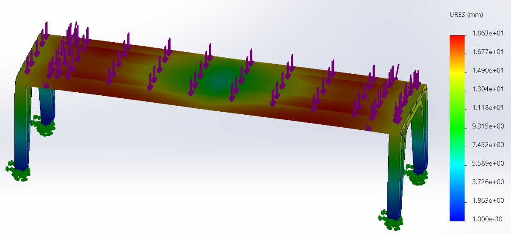
Fig. AD: Full Thermal Cycle Displacement Simulation Result of Black Locust
Main Contributions (Group Size: 4)
- Finite Element Analysis Testing
- Materials Selection Research
- Final Report Writing